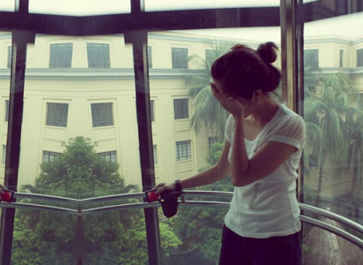

It is normal to be a little nervous when making a speech. However, many people experience rapid heartbeat, sweating, shaking, blushing, dry mouth, cracking voice and butterflies in their stomach when attempting to make a presentation. Public speaking fear is an example of a social phobia, and is the most commonly reported social fear. People fear they will be embarrassed or look foolish.
Unfortunately, fear of public speaking can adversely impact one’s career, personal life and academic achievements. For example, sufferers may avoid careers that would entail public speaking or decline promotions that would involve giving lectures or presentations.
Virtual reality therapy for fear of public speaking allows a patient to face an audience that the therapist can control. The response of the audience (applause, bored audience, interested audience) is controlled by the therapist. Prepared text (outline, notes, etc.) can be loaded into the program and appear along the top of the podium to be used as a point of reference by the patient.
The fear of heights is called acrophobia. Patients with this fear become extremely anxious in tall buildings, flying and looking out over the side of a mountain. Many people often avoid these situations.
Virtual Reality therapy for fear of heights places the patient in a glass elevator and a series of bridges. The elevator is an open elevator (no walls or ceiling) located on the inside of a 46-story hotel. The patient uses a joystick to move the elevator up and down, at his or her own pace.
 Fear of elevators often is a combination of the fear of heights and claustrophobia. Using virtual reality therapy the patient enters an elevator in a tall building. The patient starts out on the ground level looking out onto an indoor atrium moving to higher and higher levels. Without ever leaving the ground, the patient experiences the range of feelings associated with an actual elevator. Taking plenty of time and practicing anxiety management techniques you are led slowly and comfortably from one level to the next. The goal is for you to be able to master your anxious feelings throughout the entire experience of riding in an elevator. The patient uses a joystick to move the elevator up and down, at his or her own pace.
At every step of the virtual elevator ride, the therapist can see and hear what you are experiencing. The therapist has control over the exposure, the virtual ride and the length of the therapy session.
Virtual reality therapy can also help patients who are afraid of storms that have thunder and lightening. The patient is seated in a chair in a room with a large window. The weather can be varied from a calm sunny day with birds singing outside the window to severe storm conditions. The therapist can control rain intensity, wind intensity, lightning/thunder, and power failures.
(818) 465-8778 | vrtherapy@gmail.com
© 2018 fearofflying . All Rights Reserved | Design by webtakersit